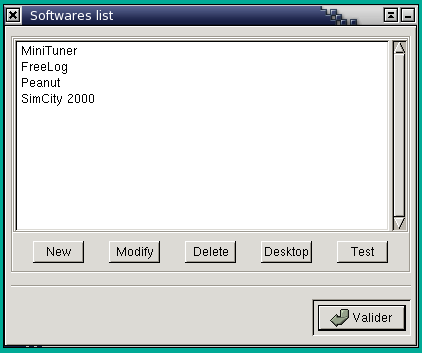
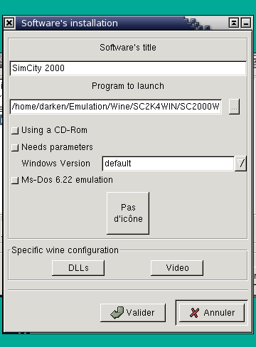
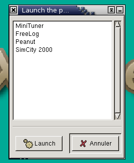
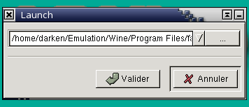

Chapter 5. Configure / Execute an application
5.1. Configure an application
5.1.1. Applications management
XWine allows to parameter the applications you want to use under Wine.

You may get this window by :
- either using the Start Menu :
Start>Parameters>Install/Uninstall
- either using the Configuration Panel :
Start>Parameters>Wine Configuration>Programs
You may then :
- Configure a new application ("New")
- Modify the configuration of an application ("Modify")
- Remove a configuration of an application ("Remove")
- Check a configuration ("Test")
- Put an icon corresponding to the application on the KDE or Gnome
desktop ("Desktop")
5.1.2. Parameter an application
When you click on "New" or "Modify", you get the following box :

You may here indicate the following parameters :
- Software title : type the name of the application.
- Program to launch : select the program to execute with the
button "..."
- Using a CD-Rom : if checked, XWine will
ask you to insert the application CD-Rom before running it
- Needs parameters : if checked, you
may enter some parameters before running an application
- Windows Version : it allows to select the Windows version for
which the software has been optimised
- Ms-Dos emulation : specifies that the software is designed for
Ms-Dos (only with Win31 version)
- Icon : click here to select an icon corresponding to the
application
- Specific Wine Configuration : the DLLs and Video buttons allow to
configure the DLL
overload and the Wine graphical mode, only for that application (refer
to the previous section)
5.2. Execute an application
There are two ways to execute an application through XWine
:
- executing a parameterized application
- executing a non-parameterized application
5.2.1. Execute a parameterized application
Click on Start>Programs>List, you will get the following box :

It displays the list of the applications which have been parameterized
(refer to section 5.1) ; select one of them then click on Launch.
5.2.2. Execute a non-parameterized application
You may also execute a non-parameterized application,
to make some test or even because you do not want to parameter it
(for example the install.exe program in a CD-Rom) ; click on
Start>Launch and you get the following box :

Type the command to execute then click on OK.
5.3. Install a new application
This is the way I use to install a new software from a CD-Rom.
- Run the setup or install from the CD-Rom through
the "Launch" box (Start>Launch).
- When the software is installed, verify it works by doing a test
through the "Launch" box.
- Parameter the application, at least to give it a title,
eventually to give it some specific parameters for the DLLs or anything
else (Start>Parameters>Install/Uninstall)
- Test the parameterized application through the application list
: Start>Programs>List